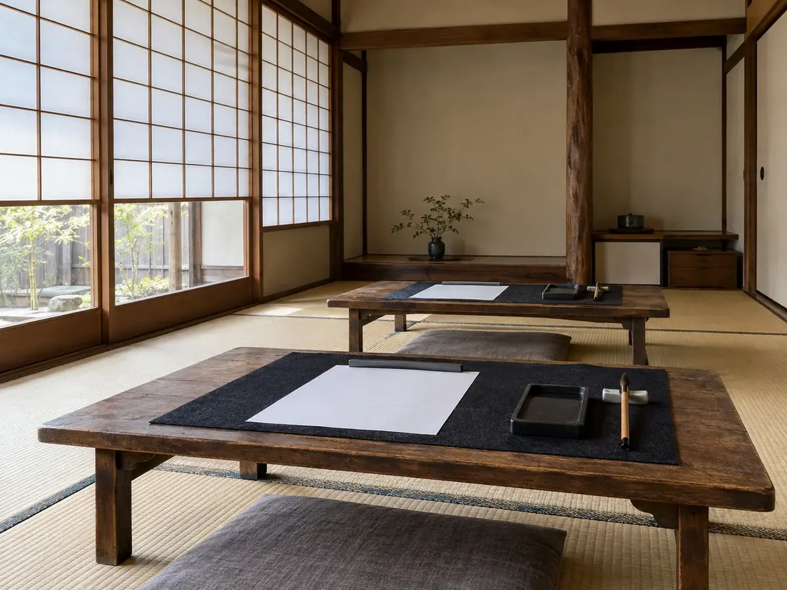
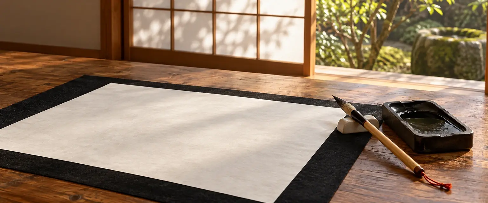

一筆に、いまの自分が出る。
風見坂の古民家でひらく、書の教室
手本をなぞる前に、自分の字の癖を知るところから始める書道教室です（架空）。筆を持ったことがない方も、久しぶりの方も。道具は教室でお貸しします。
- 大人の稽古月2回・90分
- 子どもの稽古月3回・60分
- 月謝4,400円から
- 体験90分・1,100円
- 体験は90分・1,100円
- 道具は貸し出し、手ぶらで可
- 入会をお勧めすることはありません

最初の稽古では、手本を見ずに、いつもの字でご自分の名前を書いていただきます。そこに、その人の癖が出ます。
癖は直すものというより、知っておくものだと考えています。癖が分かると、手本のどこを見ればよいかが分かります。
右上がりになる
横画が右へ上がっていく癖。字全体が傾いて見えます。
止めが流れる
止めるところで筆が止まらず、すっと抜けてしまう癖。
字と字が詰まる
一字ずつは整っていても、並べると息苦しく見える癖。

自分の字の癖を、まず知る。
教室の考え方
大人の稽古
- はじめての方は、楷書の基本の線から
- 再開の方は、書きたい書体から選べます
- 火・木の夜、土曜の昼から、月に2回を選びます
子どもの稽古
- 筆の持ち方と、とめ・はね・はらいから
- 学校の書写や書き初めの課題も持ってこられます
- 土曜の午前、第1〜第3週に通います
手ぶらで、はじめから。
稽古の内容
- 十分墨をする
硯で墨をすりながら、手と気持ちを落ち着けます
- 十分手本を見る
今日の一字の、筆の入りと抜きを一緒に見ます
- 二十分いつもの字で書く
まずは手本を横に置き、自分の字で書きます
- 十五分癖を見つける
手本と並べ、違うところを一つだけ見つけます
- 三十分もう一度書く
見つけた一つだけを意識して、何枚か書きます
- 五分片づける
筆を洗い、今日の一枚を持ち帰ります
大人の稽古（90分）の例です。子どもの稽古（60分）は、墨をする時間を短くして同じ順で進めます。
静かな九十分を、月に二度。
一回の稽古の流れ
| 稽古 | 内容 | 料金（税込） |
|---|---|---|
| 大人の稽古 | 月2回・各90分 | 6,600円／月 |
| 子どもの稽古 | 月3回・各60分（小学生） | 4,400円／月 |
| 体験 | 90分・道具の貸し出し込み | 1,100円 |
| 入会金 | 入会時のみ | 3,300円 |
金額はすべて税込・見本用の架空価格です。半紙と墨汁は月謝に含みます。教材費は別にかかりません。筆などを買う場合の目安は「道具のこと」に書いています。
入会した月の例（大人）: 入会金 3,300円 ＋ 月謝 6,600円 ＝ 9,900円
まずは一度、90分の体験へ。道具はお貸しするので、手ぶらでお越しください。
体験を申し込む（見本）月謝と、体験の料金。
料金
| 時間 | 火 | 木 | 土 |
|---|---|---|---|
| 10:00〜11:00 | — | — | 子ども第1〜第3週 |
| 11:15〜12:45 | — | — | 大人毎週 |
| 18:30〜20:00 | 大人毎週 | 大人毎週 | — |
各回6名までです。大人は、この中から月に2回を選んで予約します。日程は見本上の設定です。
稽古の日。
日程

- 体験
- 筆・硯・文鎮・下敷き・半紙を、すべてお貸しします。汚れてもよい服でお越しください。
- 入会後
- 教室の道具を続けて借りられます。貸し出しの費用はかかりません。
- 買う場合
- 筆・硯・文鎮・下敷きの一式で、5,500円前後が目安です（見本用の架空価格）。急いで揃える必要はありません。
- 持ち物
- 体験は手ぶらで構いません。続ける方は、書いた半紙を入れる袋があると便利です。
道具のこと。
貸し出しと購入の目安
- 場所
- 架空県風見坂 古民家の一室（見本上の設定）
- 駅から
- 風見坂駅から坂を上って、歩いて8分
- 車
- 駐車場はありません。近くの駐車場をご利用ください
- お子さまの送り迎え
- 稽古の前後は、玄関の中でお待ちいただけます
坂の上の、古民家で。
場所
字に自信がありません。それでも大丈夫ですか。
大丈夫です。最初にいつもの字を書いていただくのは、上手下手を見るためではなく、癖を知るためです。うまく書ける人だけが来る場所ではありません。
体験のあと、入会しなくても構いませんか。
構いません。こちらから入会をお勧めすることはありません。続けるかどうかは、ゆっくり考えてからお知らせください。
どのくらい通えば、上手になりますか。
お約束はできません。通う回数や、家で書くかどうかで変わります。稽古では、毎回一つだけ癖に気づくことを大切にしています。
子どもの稽古は、保護者が見学できますか。
体験のときは、部屋の後ろで見学できます。入会後も、事前にお知らせいただければ見学できます。
休んだ回は、別の日に振り替えられますか。
大人は、同じ月の別の回に振り替えられます（空きがある場合）。子どもは、第4週の土曜に振替の時間を設けています（見本上の設定）。
よくある問い。
よくある質問

まず一度、筆を持ってみる。
体験の申し込み
体験は90分・1,100円（税込・見本用の架空価格）。道具はすべてお貸しします。大人の方は火・木の夜か土曜の昼、お子さまは土曜の午前から選べます。
お申し込みのあと、日時の確認をお送りします。体験のあとに、入会をお勧めすることはありません。
- 体験は90分・1,100円
- 道具は貸し出し、手ぶらで可
- 入会をお勧めすることはありません